THE REAL BEST OF PHOENIX ACCORDING TO ME
This list is light on high end dining because I’m not a big partaker of fancy restaurants. Also it skews heavily toward stuff around my house. But everything on this list is 💯. I guarantee it.
-
Best Bread: Mediterra Bakehouse
Technically this is in Coolidge, not Phoenix, but you can find them at the public market on Saturday mornings and Wednesday afternoons and they have a few varieties at Whole Foods. Mediterra bakes the best bread in Phoenix bar none, and very very good bread in general. They specialize in sourdough with many options. My favorite is the Fire Bread. Their specialty breads are also all excellent. http://bit.ly/1ICL1jj
-
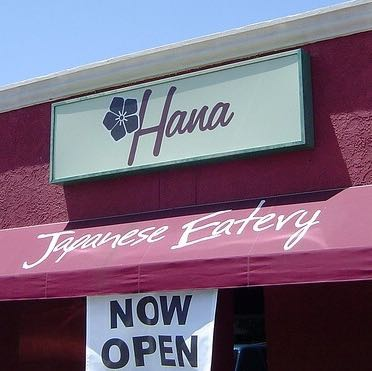
Best Unpretentious Sushi: Hana Japanese Eatery
Be careful because there is also a place called Hana in Tempe but it is unrelated. The real Hana is simple-but-nice, clean, friendly very casual place a mile from my house. Remember you're a thousand miles from the ocean so don't just order whatever you want. Instead ask if anything is very special today. They'll often say yes. And follow them on Twitter if you want to know asap when they get something interesting. Warning: BYOB.
-
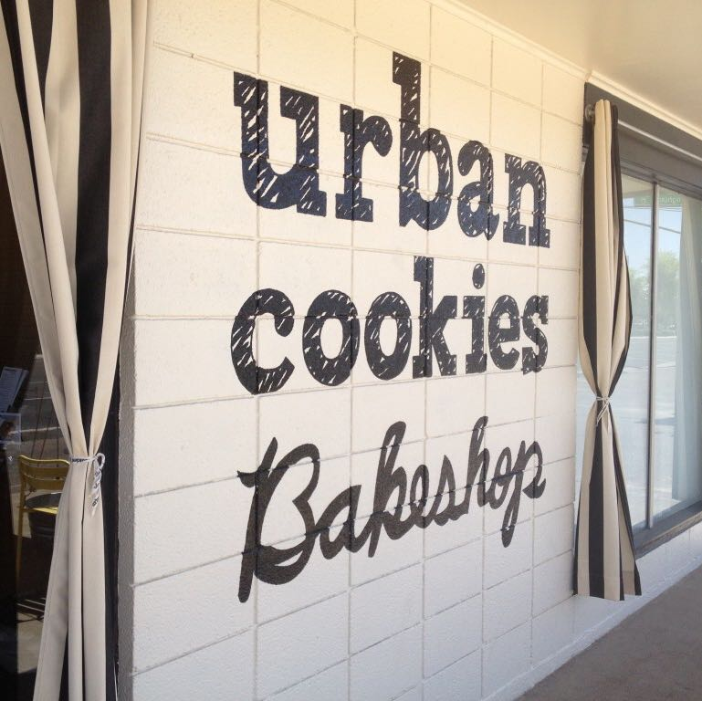
Best Sweets: Urban Cookies Bakeshop
This husband-wife team (now grown up a bit) bakes the best cookies I've ever tasted outside a home kitchen. Big, chewy-crisp, decadently buttery. They have a selection of gluten-free baked goods that are absolutely good enough to sell without that warning label. Oh and for the cupcake crowd, theirs are the only cupcakes I even like.
-
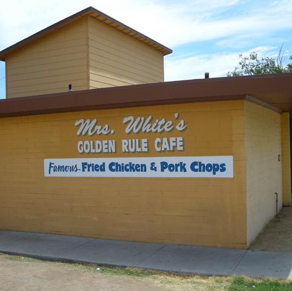
Best Comfort Food: Mrs. White's Golden Rule Cafe
Buttermilk-marinated hand-battered fried chicken cooked to order in a little pot in the back by the 80 year old Mrs. White and her progeny. I don't even like fried chicken much but this stuff is powerfully good. Of course they have sticky-sweet cornbread, sweet tea, collard greens, and all the rest. If your lucky they'll have tomato cobbler. I asked when they have it and he said, "Oh, when Mrs. White feels like making it."
-
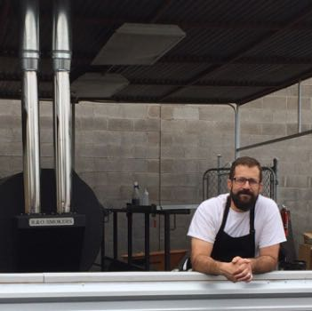
Best Barbecue: Little Miss Barebcue
Three years ago "Best barbecue in Phoenix" would have required a giant disclaimer, but Little Miss Barbecue put real barbecue on the Phoenix map. The owner runs the giant smokers all day and night so they can serve no-frills-absolutely-perfect brisket, ribs, homemade sausage, pork butt, turkey, and—on Thursdays—from-scratch pastrami. Sides are a simple affair: beans, slaw, and grits. Don't forget the Mexican coke. Expect 20 to 40 minutes in line.
-
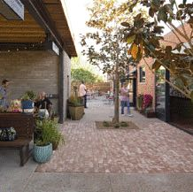
Best Lunch Salad: Windsor
I eat salads for lunch a lot because they can be interesting and unrepetitive wile staying relatively healthy. Windsor's salads are fresh and delicious and relatively cheap. Added bonus: a short walk from my house. Warning: this place is too loud for my tastes at dinner time.
-
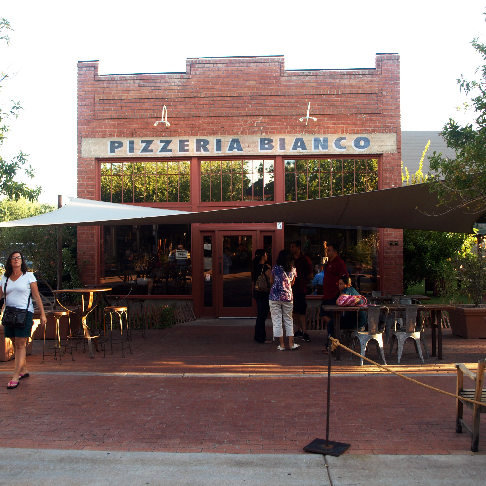
Best Pizza: Pizzaria Bianco
This is not just the best pizza in Phoenix. It's some of the best pizza in America. Chris Bianco is the first ever James Beard award winning pizza chef and he's something of a local legend. He makes the cheese in house. He co-owns the tomato farm and the tomato cannery. They also have an incredible always-different antipasti with the best of whatever's available beautifully presented. Oh and killer desserts. Pro tip: The Camelback location is roomy and takes reservations.
-
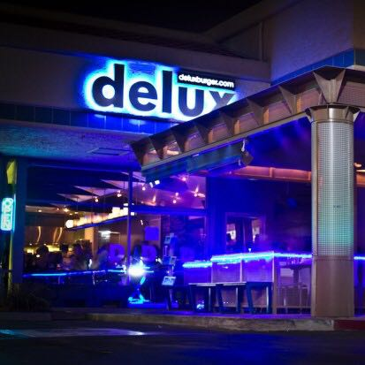
Best Burger: Delux Burger
Don't get the stupid fancy one with arugula and crap on bread with an Italian name. Just get the basic burger: lettuce, tomato, onion, cheese if that's your persuasion, on an egg bun. This burger is A+++. Neiman ranch beef, good bun, real cheese, and fresh greens.
-
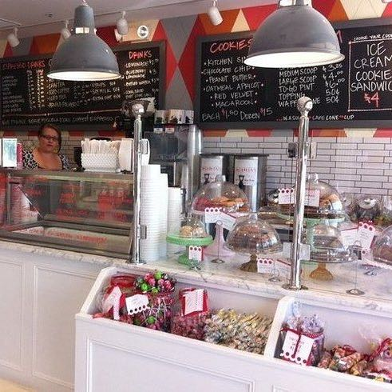
Best Ice Cream: Churn
This used to be an easy call when Crave was still around. Their fresh mint chocolate chip was the most delicious ice cream I ever tasted: fresh, slightly floral with big chunks of chocolate. But Crave didn't survive the recession. We have lots of fancy places: Gelato Spot, Sweet Republic…But for stock-standard ice cream in normal flavors, Churn is the best. Warning: they've become popular recently so there's a huge line on weekends. Ice cream isn't worth a wait for me but maybe it is for you.
-
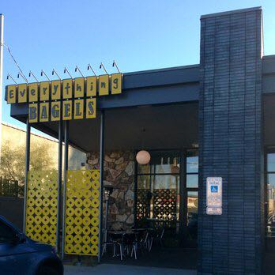
Best Bagels: Everything Bagels
I used to drive all the way to Chandler for bagels from Bagel Man. I still recommend him 100% — super friendly and great bagels — but Everything Bagels on 16th north of Bethaney Home are just as good and so much more convenient. Chewy dense slightly crusty made fresh daily. Go before 11:00 am because when they sell out they're done.
-
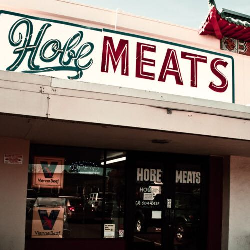
Best Butcher: Hobe Meats
This tiny place on 16th street has fantastic meats and a friendly staff. It's pricey but I've never been disappointed. The chorizo is unreal. Great pork chops, steaks, and roasts. And order your thanksgiving turkey too. They used to have killer house made beef jerky but the last time I got it it wasn't the same. Not sure what happened.
-
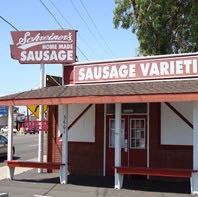
Best Sausage: Knockwurst from Schreiner's
This little sausage maker is a local treasure and their short fat Knockwurst are such a treat. Grill them til they split and eat them on a bun. Like a hot dog's platonic form. They also have fantastic house-made sauerkraut and a great assortment of pickles and mustards and stuff.
-
Best Chicago Dog: Great Dane's Dog House
Steel your stomach because this place is off-puttingly dingy with its ugly dog decor, dim lighting, and general not-very-clean vibe. "Today's Special" has been two dogs for $5 for about 25 years so I don't expect it to change tomorrow. There's nothing special here. Just a good quality boiled or grilled dog on a steamed bun with your choice of toppings. And you can just say "Chicago" to get it done right.
-
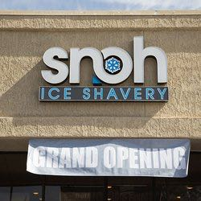
Best Chilly Treat: Snoh Ice Shavery
If you're gauche like me you probably ignore this place thinking its like snow cones or whatever. But it is actually some kind of Taiwanese thing that is interesting, fun, delicious, and not terribly unhealthy (for a frozen treat). The "ice" is fluffy, not very sweet, and comes in several flavors. It sounds weird but top it with condensed milk (along with assorted fruits, candies, cookies, and jellies) to kick up the sweet a little. We plan to try the "brick toast" soon.
-
(Bonus) Best Mechanic: Hon-Man Auto Care
Not food but just as important. We've been taking our cars to Hon-Man for 15 years, since the owner Tait first opened a little shop in Tempe. He now owns the whole building, has expanded to Flagstaff, and lives in back of the shop. He's completely competent, movingly honest, super friendly, and (my wife assures me) a total hottie. He now has a big staff so don't expect to see him necessarily but the service is always A+++. Note: only services Hondas.